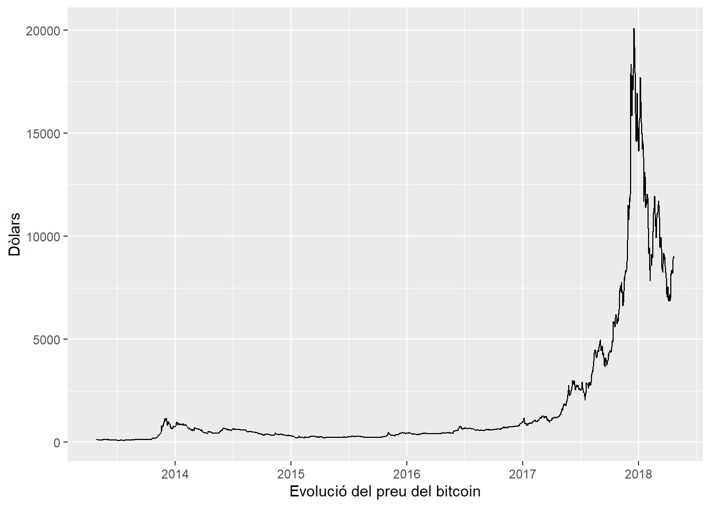

a <- 5
b <- 3
c <- a+b
c[1] 8En aquesta sessió ens centrarem en la comunicació dels resultats d’una anàlisi de dades de manera clara, estructurada i reproduïble. Fins ara, hem treballat principalment amb scripts, però en un context real, el valor de l’anàlisi depèn tant de la qualitat tècnica de l’anàlisi com de la manera en què es presenta. Per això, introduirem l’ús de R Markdown, una eina que permet integrar text, codi i resultats en un únic document dinàmic.
L’objectiu és entendre com elaborar un informe complet que combini explicació narrativa, codi i visualitzacions. L’objectiu és fer informes reproduïbles, és a dir, que puguin regenerar-se automàticament a partir de les dades i el codi, evitant errors derivats de copiar i enganxar resultats manualment o de tenir diferents versions d’un mateix document.
Crearem un informe en format HTML i veurem com publicar-lo en línia mitjançant plataformes com RPubs, de manera que es pugui compartir amb altres persones.
Un document d’R Markdown es basa en la combinació de text, codi i resultats en un únic fitxer font (.Rmd) que després es transforma en un document final (habitualment HTML). Aquesta estructura està pensada per facilitar la lectura humana sense perdre la capacitat d’execució automàtica.
Un document R Markdown conté tres elements principals:
Capçalera YAML
Text en Markdown (Markdown és un llenguatge de marcatge molt senzill que permet escriure text amb format, com ara títols, llistes, cursives, negreta, etc.)
Blocs de codi (chunks)
És la primera secció del document i defineix les metadades i el format de sortida. Està delimitada per tres guions (---) abans i tres guions (---) després. Exemple de capçalera bàsic:
---
title: "Títol de l'informe"
author: "Nom de l'autor/a"
date: "2026-04-24" (pot ser automàtica amb "r Sys.Date()")
output: html_document
---En l’exemple anterior, hem fixat output: html_document, que genera un document en format HTML, l’opció més habitual i la que farem servir al llarg d’aquest tema. No obstant, R Markdown permet generar el mateix informe en altres formats simplement canviant aquest paràmetre a la capçalera YAML, sense necessitat de modificar la resta del document. Els formats més habituals són:
-html_document: genera un document HTML, ideal per visualitzar-lo en un navegador o publicar-lo en línia (per exemple, a RPubs).
-pdf_document: genera un document PDF, útil quan es necessita un format més formal o imprimible. Cal tenir en compte que aquest format requereix tenir instal·lada una distribució de LaTeX al nostre ordinador (com TinyTeX, que es pot instal·lar directament des de R amb tinytex::install_tinytex()).
-word_document: genera un document de Microsoft Word («.docx»), molt útil quan el resultat final s’ha de compartir amb persones que necessiten editar-lo o inserir-lo en un document més ampli.
Un dels grans avantatges d’R Markdown és que el mateix contingut (text, codi i resultats) es pot adaptar a diferents formats de sortida simplement canviant aquesta línia de la capçalera, sense haver de refer l’informe des de zero per a cada format.
A més de definir el format de sortida, la capçalera YAML també permet afegir altres opcions que personalitzen l’aspecte i l’estructura del document final. Algunes de les més habituals són:
-toc: true: afegeix automàticament una taula de continguts al principi del document, generada a partir dels títols i subtítols que hàgim creat amb Markdown.
toc-float: true: fa que la taula de continguts es mantingui visible mentre es navega pel document (només disponible per a sortida HTML).
number-sections: true: numera automàticament els títols i subtítols del document (Secció 1, 1.1, 1.2, etc.).
df-print: paged: millora la visualització dels dataframes, mostrant-los amb un format de taula paginada i navegable, en lloc del format de text pla per defecte.
---
title: "El meu informe"
output:
html_document:
toc: true
toc_float: true
number_sections: true
df_print: paged
---Aquestes opcions no modifiquen el contingut de l’informe, sinó únicament la seva presentació, però poden millorar molt la llegibilitat i la navegació del document, especialment quan aquest és llarg o conté moltes seccions.
El cos del document s’escriu amb Markdown, un llenguatge lleuger per formatar text. Exemples habituals:
cursiva (text entre astericos)
negreta (text entre dobles astericos asterics)
codi (text entre accents oberts). Exemple: Calcula la mitjana aritmètica amb la funció mean.
Els chunks són la part dinàmica del document. Permeten executar codi R i inserir-ne els resultats automàticament. Estan identificats amb ```{r}.
En el procés de creació del document R Markdown, es poden executar els chunks per comprovar el seu funcionament clicant sobre la fletxa verda de la dreta.
a <- 5
b <- 3
c <- a+b
c[1] 8Un altre exemple de chunk:
data(cars)
summary(cars) speed dist
Min. : 4.0 Min. : 2.00
1st Qu.:12.0 1st Qu.: 26.00
Median :15.0 Median : 36.00
Mean :15.4 Mean : 42.98
3rd Qu.:19.0 3rd Qu.: 56.00
Max. :25.0 Max. :120.00 Els chunks poden tenir opcions dins dels claudàtors:
echo = FALSE: no es mostra el codi, però sí el resultat.
message = FALSE: evita que els missatges que genera el codi apareguin al document.
warning = FALSE: evita que els missatges de warning generats pel codi apareguin al document.
include = FALSE: ni el codi ni el resultat apareix en el document (però s’executa i es pot aprofitar en un altre chunk).
L’últim pas és el renderitzat (knit). Quan cliquem aquesta opció, R executa tots els chunks i genera el document HTML final.
Aquest procés garanteix que els resultats són actuals, tot és reproduïble i no hi ha manipulació manual.
Per defecte, un dataframe es veu igual que a RStudio.
head(mtcars, 10)Hi ha diversos paquets que permeten fer taules. Una opció és la funció kable del paquet knitr. Per exemple:
| mpg | cyl | disp | |
|---|---|---|---|
| Mazda RX4 | 21.0 | 6 | 160 |
| Mazda RX4 Wag | 21.0 | 6 | 160 |
| Datsun 710 | 22.8 | 4 | 108 |
| Hornet 4 Drive | 21.4 | 6 | 258 |
És possible incorporar gràfics al document. Per exemple:
plot(cars)
El següent chunk carrega un dataset des de l’ordinador (el fitxer de “mostra” que vam fer servir a la primera sessió del curs), realitza una petita anàlisi i mostra el resultat per pantalla. La idea clau és que, si canviem el fitxer original (per exemple, perquè ens adonem que ens faltaven alguns casos que havíem oblidat afegir), R importarà el nou dataset i recalcularà automàticament tots els resultats.
library(tidyverse)
empleats <- read_csv2("data/empleats.csv", locale = locale(encoding = "UTF-8"))
mean(empleats$edat)[1] 38.53571A més, podeu inserir càlculs directament dins de la narrativa: “L’edat mitjana dels empleats és 38.5357143 anys”.
Recordeu que també podeu carregar les dades directament des d’Internet. Per exemple, per generar aquest gràfic que mostra l’evolució del preu del bitcoin entre 2013 i 2018.
library(tidyverse)
bitcoin <- read.table("https://bit.ly/3dyZXbz", header = T)
bitcoin$date <- as.Date(bitcoin$date)
ggplot(bitcoin, aes(x = date, y = value)) +
geom_line() +
xlab("Evolució del preu del bitcoin") +
ylab("Dòlars")
Un cop tenim l’informe generat en HTML, el pas final és fer-lo accessible a altres persones. En aquest apartat veurem com publicar-lo fàcilment a Internet mitjançant RPubs.
Publicar un informe en línia permet compartir resultats sense necessitat d’enviar fitxers adjunts, crear un portfoli personal de projectes, etc.
RPubs és la forma més senzilla de publicar informes HTML creats amb R Markdown. El procés és el següent:
Generar el document HTML (botó Knit)
A RStudio, clicar “Publish”
Seleccionar RPubs
Iniciar sessió (o crear compte, si és la primera vegada que el feu servir)
Afegir un títol i una descripció (opcional)
El resultat és una URL pública que podeu compartir.
Tot i que RPubs és ideal per començar, hi ha altres opcions més potents com Quarto, una evolució de R Markdown que permet webs complets, blogs i llibres, així com la integració de R amb altres llenguatges com Python.
Crea un document senzill amb R Markdown, que inclogui com a mínim una breu introducció en text, algun càlcul o resum de dades i una visualització bàsica (gràfic o mapa).
Un cop redactat el document, genera la versió final en format HTML mitjançant el procés de knit. Verifica que el document es crea correctament i que tots els elements (text, codi i resultats) es mostren de manera adequada.
Finalment, publica l’informe utilitzant la funcionalitat integrada de RStudio cap a RPubs. Aquest pas et permetrà obtenir una adreça web pública que podràs compartir.